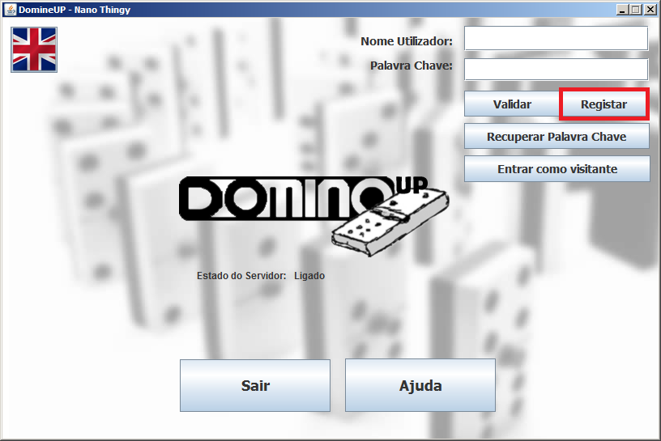
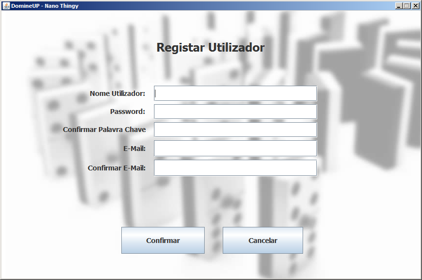
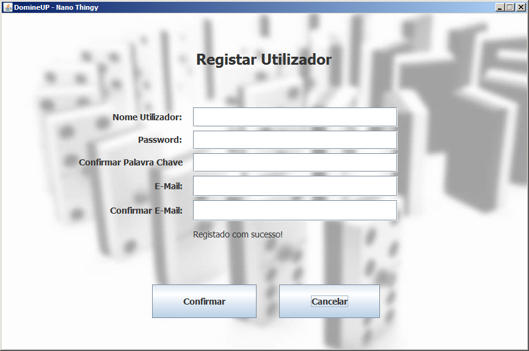

Só um utilizador registado pode fazer login e aceder efetivamente ao jogo. O acesso ao menu de registo só é possível após o estabelecimento da conexão ao servidor. Deve selecionar-se o botão "Registar" da interface inicial:

Aparecerá, então, a seguinte janela onde o utilizador poderá introduzir os seus dados pessoais:

O username e o email deverão ser únicos na base de dados do servidor e os dados terão que ser bem introduzidos. Caso as condições anteriores não sejam reunidas, aparecerá na própria janela o erro específico que ocorreu:
Na ausência de erros, é indicado na própria janela que o registo foi devidamente efetuado e o utilizador terá que premir no botão "Cancelar" de modo a regressar à interface inícial da aplicação:
